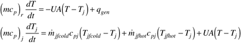
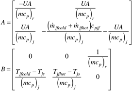
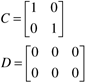

| [ Team LiB ] |
|
M11.4 Batch Model 3: Cascade ControlThe process model, if the jacket make-up flow rate is the manipulated input, is  As written, this assumes that the jacket is a "once through" flow and that there are cold and hot jacket feed streams. It can also be shown that a jacket recirculating heat-transfer system has the same model equations, where the jacket mass flow rate is simply the make-up flow to the recirculating jacket heat-transfer system [compare Equations (M8.11) and (M8.12) for a CSTR]. Here a split-range control strategy would be used, with either the cold or hot fluid stream admitted to the jacket, depending on the split-range controller output. Linearizing Equation (M11.12), we find the following state space model matrices  where inputs 1 and 2 (corresponding to columns 1 and 2 of the B matrix) are the cold and hot jacket feedstreams, respectively. The third input is the disturbance (reaction heat flow), qgen. Since the measured outputs are the reactor and jacket temperature,  Problem M11.8 Simulation Model for Intermediate Scale Reactor For the 0.5 m3 reactor, assuming that both the reactor and jacket fluids are water, and the jacket volume is 25% of the reactor volume (and neglecting the thermal mass of the non-fluid components), find the state space model. For the initial steady-state assume that there is no reaction heat flow, so the cold and hot fluid flow rates are zero initially. What do you notice about the eigenvalues of the A matrix? Find the transfer functions relating the manipulated inputs to the outputs; what do you notice about one of the poles? Observe the responses to step changes in the manipulated inputs. Are these realistic? (Hint: You should find that the responses are integrating in nature; this is expected for the initial responses, but not for the long-term behavior.) Problem M11.9 Cascade Control with Split-Range Jacket Temperature Controller (this problem is better for a longer-term project) Develop a jacket temperature controller that has a split-range output (see Chapter 12 for an example SIMULINK model for a stirred-tank heater). The controller output should be similar to Figure M11-2. Design the jacket temperature (secondary) controller using any method that you desire. Next, design the reactor temperature (primary) controller. Perform simulations where the reactor temperature setpoint is changed from 20°C to 50°C. Compare responses to step setpoint changes, for each size reactor. Discuss the practical limitations to the expected dynamic performance for each size reactor, especially considering the constraints on jacket inlet temperature (–10 to 150°C). It is recommended that both the primary and secondary controllers include antireset windup (Chapter 11) strategies. |
| [ Team LiB ] |
|